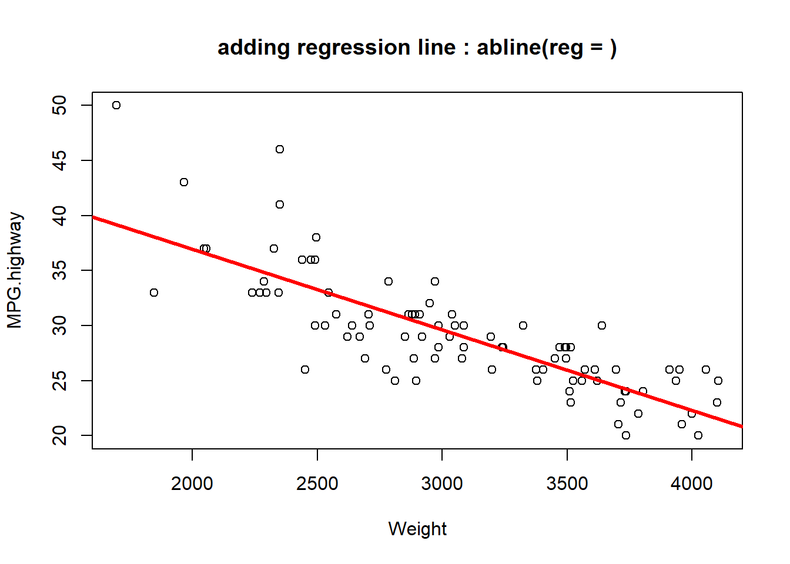
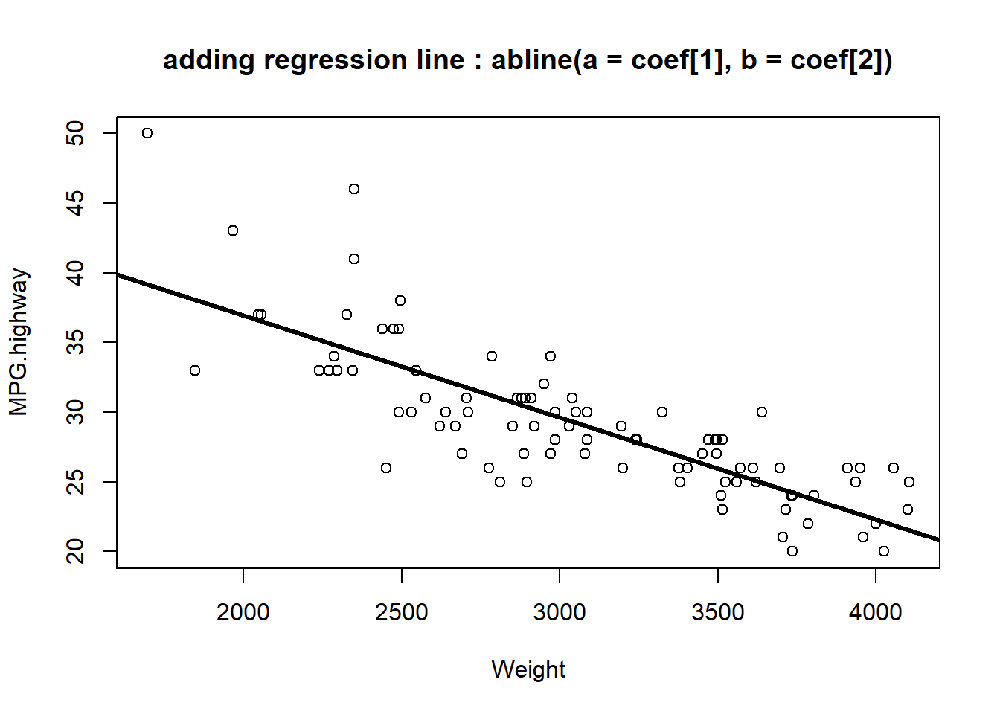
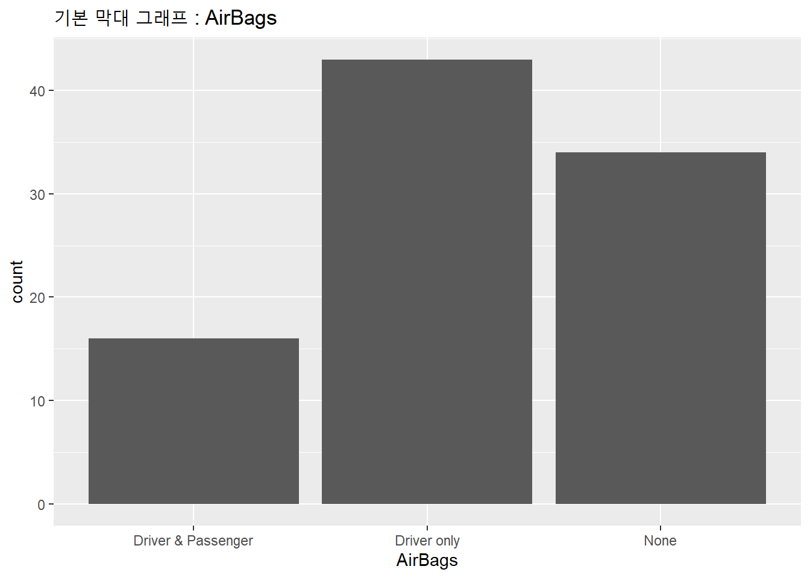

5.3 직선 연결, 추가 : lines(x, y), abline(a, b), abline(h=y), abline(v=x)
지난번 포스팅에서는 그래프에 추가적인 정보를 입력하는 낮은 수준의 그래프 함수(low level graphic functions) 중에서 (1) 제목, XY축 Label 추가하는 title(), (2) XY축의 형태를 변환하는 axis(side, ...)에 대해서 알아보았습니다.
이번 포스팅에서는 낮은 수준의 그래프 함수 두번째로 (3) 직선 연결, 추가 : lines(x, y), abline(a, b), abline(h=y), abline(v=x) 에 대해서 소개하겠습니다.
[ 낮은 수준의 그래프 함수 (Low level graphic function) ]
Figure 5.4: 낮은 수준의 그래프 함수 : 직선
MASS 패키지에 들어있는 Cars93 데이터프레임의 **Weight (차의 무게)**와 **MPG.highway (고속도로 연비)** 두 개의 변수를 가지고 산포도를 그린 후에, **lines() 함수로 선형 회귀식을 추가해보고, abline() 함수로 x축과 y축의 평균으로 수직선과 수평선을 추가**하여 보겠습니다.
line()함수의 일반적인 사용법은 다음과 같습니다.
lines(x, y = NULL, type = "l", ...)| 구분 | 기능 설명 |
|---|---|
| x, y | x, y 좌표 벡터 (coordinate vectors of points to join) |
| type = “l” | 선(line) 그래프라는 뜻임 (character indicating the type of plotting) |
| … | 선 유형 (lty), 선 색깔 (col), 선 두께(lwd) 등의 그래프 모수 입력 (Further graphical parameters) |
abline() 함수의 사용법은 다음과 같습니다.
abline(a = NULL, b = NULL, h = NULL, v = NULL, reg = NULL,
coef = NULL, untf = FALSE, ...) | 구분 | 기능 설명 |
|---|---|
| a, b | 절편과 기울기, 단일 값 (the intercept and slope, single values) |
| h | y값을 지나는 수평인 직선 (the y-value(s) for horizontal line(s).) |
| v | x값을 지나는 수직인 직선 (the x-value(s) for vertical line(s).) |
| reg | 회귀직선 추가 (an object with a coef method) |
| coef | 절편과 기울기로 이루어진 벡터 (a vector of length two giving the intercept and slope) |
| untf | 변환 안된 값을 쓸지를 묻는 옵션. 만약 y값을 로그변환한 경우 untf = TRUE 라고 설정하면 로그변환 전의 원래값 기준으로 좌표에 그래프가 그려짐 (logical asking whether to untransform.If untf is true, and one or both axes are log-transformed, then a curve is drawn corresponding to a line in original coordinates, otherwise a line is drawn in the transformed coordinate system. The h and v parameters always refer to original coordinates) |
* 출처 : http://sites.stat.psu.edu/~dhunter/R/html/graphics/html/abline.html
먼저 lm() 함수를 사용해서 y = MPG.highway (고속도로 연비), x = Weight (차의 무게) 변수 간의 선형 회귀모형을 만들면 아래와 같습니다.
##------------------------------------
## adding lines to a plot
##------------------------------------
# fitting regression model
fit_1 <- lm(MPG.highway ~ Weight, data = Cars93)다음으로, Weight (무게)와 MPG.highway (고속도로 연비)의 두 변수 산포도를 그리고, 위에서 만든 선형 회귀선을 추가해보겠습니다.
세가지 방법이 있는데요,
lines()를 사용하는 방법,abline(reg = )abline(a = coef[1], b = coef[2])를 사용하는 방법은 아래와 같습니다.
참고로, 그래프 모수(parameters)로서 색깔 지정은 col, 선 유형 지정은 lty, 선 두께 지정은 lwd 를 사용하면 됩니다.
## adding regression line to the current plot
# (1) lines()
with(Cars93, plot(MPG.highway ~ Weight)) # scatter plot of MPG.highway~Weight
lines(Cars93$Weight, fit_1$fitted.values, col = "blue")
title("adding regression line : lines()") 
# (2) abline(reg = regression_model)
with(Cars93, plot(MPG.highway ~ Weight))
abline(reg = fit_1, col = "red", lwd = 3)
title("adding regression line : abline(reg = )")
# (3) abline(a = fit_1$coef[1], b = fit_1$coef[2])
with(Cars93, plot(MPG.highway ~ Weight))
abline(a = fit_1$coef[1], b = fit_1$coef[2], col = "black", lwd = 3)
title("adding regression line : abline(a = coef[1], b = coef[2])")
fit_1$coef # coefficients of regression model ## (Intercept) Weight
## 51.601365429 -0.007327059fit_1$coef[1] # intercept## (Intercept)
## 51.60137fit_1$coef[2] # slope## Weight
## -0.007327059이번에는 loess.smooth() 함수로 비모수 회귀곡선을 적합시키고, lines() 함수로 smoothed regression line을 현재 그래프에 추가해보는 방법을 소개하겠습니다.
## adding smoothed regression line to the current plot : lines(), loess.smooth()
# (1) fitting non-parametric regression model
fit_2 <- loess.smooth(x = Cars93$Weight, y = Cars93$MPG.highway)
names(fit_2) ## [1] "x" "y"fit_2 $x ## [1] 1695.000 1744.184 1793.367 1842.551 1891.735 1940.918 1990.102 2039.286
## [9] 2088.469 2137.653 2186.837 2236.020 2285.204 2334.388 2383.571 2432.755
## [17] 2481.939 2531.122 2580.306 2629.490 2678.673 2727.857 2777.041 2826.224
## [25] 2875.408 2924.592 2973.776 3022.959 3072.143 3121.327 3170.510 3219.694
## [33] 3268.878 3318.061 3367.245 3416.429 3465.612 3514.796 3563.980 3613.163
## [41] 3662.347 3711.531 3760.714 3809.898 3859.082 3908.265 3957.449 4006.633
## [49] 4055.816 4105.000# (2) scatter plot, adding smoothed regression line
with(Cars93, plot(MPG.highway ~ Weight))
lines(fit_2$x, fit_2$y, col = "blue", lwd = 3)
title("adding smoothed regression line: lines(), loess.smooth()")
## drawing horizontal or vertical straight lines : abline()
with(Cars93, plot(MPG.highway ~ Weight))
# (1) vertical line
abline(v = mean(Cars93$Weight), col = "black", lty = 3, lwd = 2)
# (2) horizontal line
abline(h = mean(Cars93$MPG.highway), col = "blue", lty = 3, lwd = 2)
title("drawing horizontal or vertical straight lines : abline()")
다음번 포스팅에서는 points() 함수로 점을 추가하는 방법을 소개하겠습니다.